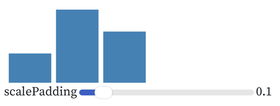

Access Path Selection in Relation Database Management System
本文是介绍数据库查询计划的鼻祖论文，基于 IBM 早起的 System R 试验性关系数据库，在现在看来，应该是关系数据库的“旧石器时代”。
1. Introduction
2. Processing of an SQL statement
4 phases:
- parsing: SQL to Query Block(AST)
- optimization: catalog lookup, validate, plan generation(access plan selection)
- code generation
- execute
3. Research Storage System
- Relation: Set of Tuple
- Page(4K): Set of Tuple( each tuple tagged with relation-id, so can contain different relation's tuple)
- no tuple spans a page
- Segment: Set of Page
- Index: B-trees
- clustered index
- SCAN: open, next, close
- Segment scan
- Index scan
- scan filter
4. Costs for an access-path
COST = Page_Fetches + W * RSI_Calls
- Page Fetches: IO Cost
- RSI Calls: CPU Cost
5. Access path selection for Joins
- 2-way join
- selection 1: outer(probe side) and inner(build side)
- selection 2: join method
- nested loops
- merging scan: 两个表在 join column 上已排序
- 这篇文章没有提到 hash-join，这是现在主流数据库 join 的主要方式。
- N-way join is a recur 2-way join
- paths: 最多
N!种可能性
- paths: 最多
- optimization
- 只考虑：inner side 与 outer side 有 join 连接的情况。
- 构建一颗 access path tree，对每一条path，评估其 cost
- N:
C-outer的基数：N = (product of the cardinalities of all relations T of the join so far) * (product of the selectivity factors of al 1 applicable predicates) C-nested-loop-join(path1, path2) = C-outer(path1) + N * C-inner(path2)C-merge(path1, path2) = C-outer(path1) + N * C-inner(path2)-- 不太理解这个 cost 函数，merge 时，C-inner(path2) 会显著小于 nested loop。
- 思考：对最新的关系数据库而言，优化应考虑：
- filter 尽量下压到 scan 阶段
- 如果不能下压到 scan 阶段，则尽量提前到 join 之前。
- 使用 hash-join 时，尽可能选择技术小的作为 build side，技术大的作为 input-side
- 如果左右两侧已按 join column 排序，则可选择 merge-sort join
6. Nested Query
- 非相关子查询：如果子查询中未使用自由变量，则可以独立执行，而无需针对每一行展开执行。
- 相关子查询
Dynamic Programming Strikes Back (动态规划)
本文介绍了一种改进的 DPccp 算法，更好的支持复杂的 join predicate 和 outer joins，可以带来数量级上的性能提升。
1. 简介
CBO：Cost Based Optimization RBO: Rule Based Optimization Join Order 在 CBO 中非常重要。 经典论文：access path selection:
- 按照数据规模从小到大的顺序（这一条并没有在该文中明确提到）
- left deep tree (虽然简单，但并不一定是最佳的)
- DPsize
超图
- 超图
- H = (V, E)
- V: a set of nodes (表、关系)
- E: a set of hyper edges （join)
- e: (u, v): u, v: non empty subset of V
- simple edge: |u| = |v| = 1
- simple graph: all edges are simple edges.
- 子图 H' = (V', E')
- $V' \in V$
- $E' \in E$
- Connected
- $|V| = 1$
- partition V', V", edge e = (u,v), $u \in V', v \in V"$
- CSG: connected subgraph, CMP: Connected Complement
- csg-cmp pair
Join 顺序的问题，就演变为查找 csg + csp 对的问题。
算法
评估
参考：
How Vega Works
原始连接：https://observablehq.com/@vega/how-vega-works#inputSpec
- Vega 使用 JSON 描述，有对用 JSON-Schema 规范。
- Vega 不仅仅适用于静态的可视化，其具有交互能力和渲染动态数据的能力
示例：
{
"width": 200,
"height": 100,
"data": [{
"name": "table",
"values": [{
"key": "A",
"value": 4
}, {
"key": "B",
"value": 10
}, {
"key": "C",
"value": 7
}]
}],
"scales": [{
"name": "xscale",
"type": "band",
"domain": {
"data": "table",
"field": "key"
},
"padding": {
"signal": "scalePadding"
},
"range": "width"
}, {
"name": "yscale",
"type": "linear",
"domain": {
"data": "table",
"field": "value"
},
"range": "height"
}],
"marks": [{
"type": "rect",
"from": {
"data": "table"
},
"encode": {
"update": {
"x": {
"scale": "xscale",
"field": "key"
},
"y": {
"scale": "yscale",
"field": "value"
},
"y2": {
"scale": "yscale",
"value": 0
},
"width": {
"scale": "xscale",
"band": 1
},
"fill": {
"value": "steelblue"
}
}
}
}],
"signals": [{
"name": "scalePadding",
"value": 0.1,
"bind": {
"input": "range",
"min": 0,
"max": 0.99,
"step": 0.01
}
}]
}

Visualization as Reaction Dataflows
对一个源文件，Vega 会生成数据流图 dataflow graph，来处理从数据到可视化元素、坐标轴、图例的映射，以及响应交互式事件。
dataflow graph 包括：
- nodes(operators)：处理数据计算（源数据、派生的数据、可视化图元数据，signal）
- edges: 数据流向
- parameter edges
- pulse edges
- 灰色节点：signals
- 红色节点：datasources
- blue 节点：可视化marks
- 白色节点：内部的operators
- 黑色边： 数据流依赖
- 灰色边：parameter 依赖 node 颜色：与目前产品中的不一致了。
- datajoin: map input data objects to scenegraph mark items
- collect: 收集 datajoin 的输出
- mark：bind mark to the scenegraph
- encode: 编码每个 mark 的属性
- bound： 计算每个 mark 的边界，用于布局，和处理点击事件
- render: 提交 scenegraph 修改到渲染队列中
- sieve: 传播 mark 的修改
Parse a Vega Spec
parsedSpec = vega.parse(inputSpec)
- 解析 JSON，生成 dataflow graph, 这个 graph 目前并不是一个 JSON
- encode.update 编译为 JavaScript 代码
节省后续的解释时间o.x = _["%xscale"](datum["key"]); o.y = _["%yscale"](datum["value"]); o.y2 = _["%yscale"](0); o.width = this.__bandwidth(_["%xscale"]); o.fill = "steelblue";
View & Dataflow Runtime
Scenegraph & Rendering
Vega Dataflow 计算并维护一个 scenegraph，这是一棵可视化元素的树，可以通过 SVG 或 Canvas 进行渲染。 在图元中， mark 是一组 item（每个item 对应单次 encode ），这个与我之前理解的概念不同。 对 scenegraph 进行更新后，也可以进行高效的更新，而非重新渲染整个图。 使用 Canvas 时，如何进行增量式的渲染，应该还是很有技术挑战的。
坐标轴、图例的处理
Vega 对 Axies 会生成 axis-grid, axis-tick, axis-label, axis-domain 等图元。 对图例也是如此，其实还是相当于一个 Dataflow 的语法糖